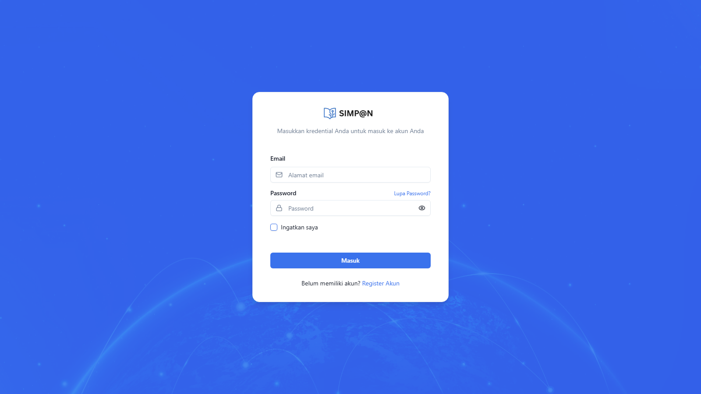
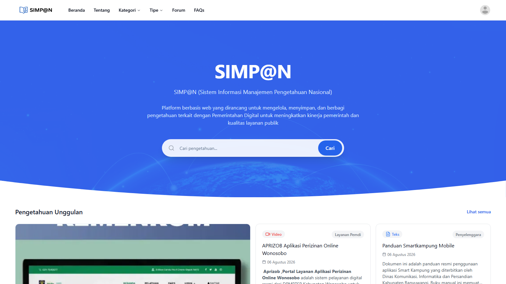
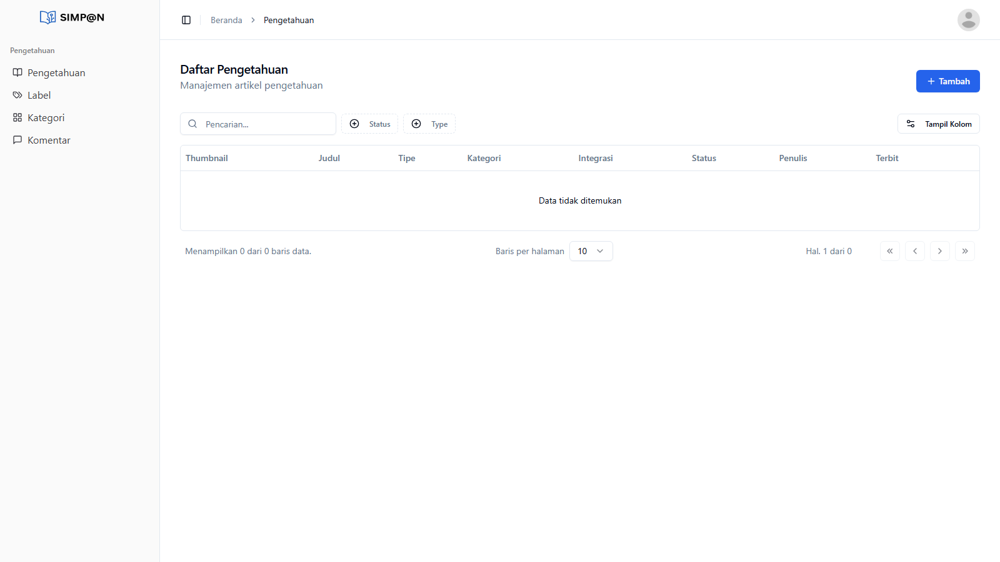
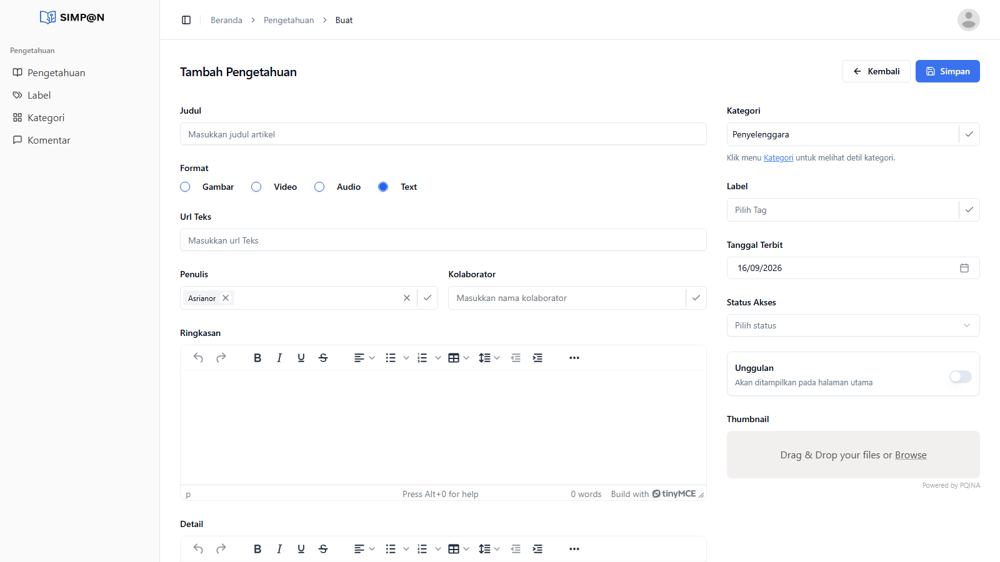
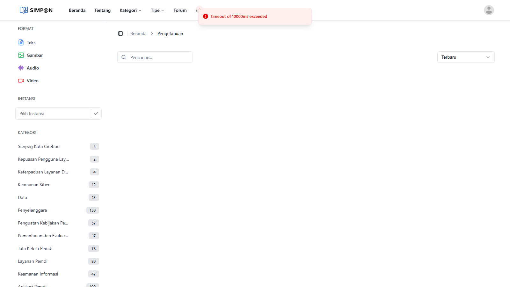

BUKU PANDUAN PRAKTIS
KREATOR PENGETAHUAN
Tata Cara Dokumentasi Bukti (*Evidence*), Penyusunan Praktik Baik Berstandar Nasional, dan Publikasi pada Portal SIMP@N BRIN (simpan.brin.go.id)
Pendahuluan & Landasan Strategis
Transformasi Digital Pemerintah Indonesia bergerak dari era digitalisasi administratif menuju ekosistem terpadu yang berfokus pada kemanfaatan nyata, inklusivitas, dan kepuasan pengguna.
Aset terbesar dalam penyelenggaraan pemerintahan daerah bukan hanya perangkat keras atau aplikasi semata, melainkan pengetahuan institusional (*institutional knowledge*): yaitu bagaimana aparatur di SKPD Kabupaten Banjar menyelesaikan tantangan operasional, menyederhanakan birokrasi, dan menghadirkan layanan publik yang prima.
RPerpres Pemdi
Pasal 30 ayat 7 & Pasal 32: Manajemen Pengetahuan dikoordinasikan bersama BRIN untuk mendukung penyediaan pengetahuan layanan digital pemerintah.
PerBRIN No. 2/2024
Pedoman 5 Siklus Manajemen Pengetahuan: Pengumpulan → Pengolahan → Penyimpanan → Penggunaan → Alih Pengetahuan.
Evaluasi Indeks (5%)
Menjadi indikator penilaian tingkat kematangan manajemen layanan digital Pemerintah Kabupaten Banjar.
Akses & Otentikasi Sistem (Login)
Kreator Pengetahuan mengakses portal SIMP@N BRIN melalui alamat web resmi. Tampilan login desktop dirancang aman dengan enkripsi kredensial.

Langkah-Langkah Masuk:
-
Buka peramban dan masukkan alamat:
https://simpan.brin.go.id/en/user/login. -
Masukkan Email Resmi SKPD (contoh:
***@banjarkab.go.id). - Masukkan Kata Sandi default yang diberikan oleh administrator Diskominfo (disarankan langsung mengganti kata sandi setelah login).
- Klik tombol biru Masuk.

Keterangan: Setelah login, klik ikon foto profil/avatar di pojok kanan atas untuk memunculkan menu dropdown, lalu klik Dashboard guna masuk ke area kerja pengelolaan pengetahuan.
Navigasi Menu & Dashboard "Daftar Pengetahuan"
Pada area kerja Dashboard (/admin/knowledge/knowledges), Kreator Pengetahuan dapat melihat seluruh daftar draf artikel yang pernah dibuat, melakukan pencarian, menyaring status, dan memulai penulisan draf baru.

Elemen Menu Samping (Sidebar):
- 📖 Pengetahuan: Modul utama melihat draf dan artikel terbit.
- 🏷️ Label: Pengelolaan kata kunci/tagar pencarian.
- 🗂️ Kategori: Pengelompokan arsitektur tematik SPBE/Pemdi.
- 💬 Komentar: Riwayat catatan revisi kurator.
Kolom Tabel Informasi:
- Thumbnail & Judul: Visual grafis dan judul inovasi.
- Kategori & Tipe: Klaster tematik & format konten.
- Status Draf: Draft • Review • Perbaikan • Terbit.
- Penulis & Tanggal: Identitas PIC SKPD & waktu rilis.
Petunjuk Teknis Pembuatan Artikel Pengetahuan
Setelah menekan tombol `+ Tambah`, sistem akan menampilkan formulir entri terpadu dengan 2 kolom utama: Kolom Konten & Narasi (Kiri) dan Kolom Taksonomi & Metadata (Kanan).

Rincian Komponen Formulir:
Text sebagai standar artikel tertulis.
Eksternal untuk publikasi nasional atau Internal).
Jelaskan kondisi sebelum inovasi, kendala operasional, keterbatasan geografis/birokrasi, dan dampak yang dialami masyarakat.
Uraikan langkah pemecahan masalah, perubahan SOP, integrasi aplikasi/TIK, dan pembagian tugas antar-aparatur.
Sajikan data kuantitatif sebelum vs sesudah (efisiensi waktu pelayanan, penghematan anggaran, peningkatan indeks IKM).
Kemukakan kendala yang dihadapi saat pelaksanaan, solusi mitigasi, serta saran teknis bagi SKPD/Pemda lain yang ingin meniru inovasi ini.
Standar Evidence & Prinsip Claim → Proof
Kekuatan utama sebuah aset pengetahuan di SIMP@N BRIN bertumpu pada keabsahan bukti (*evidence*). Setiap pernyataan atau klaim keberhasilan wajib didukung oleh dokumen bukti faktual.
| Kategori Evidence | Klaim Narasi (*Claim*) | Bukti Wajib (*Proof*) |
|---|---|---|
| 1. Tata Kelola | "Inovasi telah memiliki payung hukum resmi dan SOP baku." | Salinan PDF SK Bupati, Perbup, atau SOP Kadis bernomor & bertanda tangan. |
| 2. Implementasi & Dampak | "Waktu tunggu pelayanan terpangkas dan kepuasan warga meningkat." | Data kuantitatif durasi (sebelum: 3 hari → sesudah: 15 menit), Laporan IKM resmi. |
| 3. Teknologi & Integrasi | "Sistem terhubung otomatis dengan data kependudukan / pusat." | Tangkapan layar arsitektur integrasi, dokumentasi API, atau log pertukaran data. |
| 4. Pemanfaatan Riil | "Sistem digunakan aktif oleh ratusan pengguna setiap hari." | Screenshot dashboard statistik transaksi aktif bulanan / tahunan. |
Kriteria Kurasi & Strategi Meraih Skor ≥ 80
Kurasi artikel dilakukan secara berjenjang oleh Tim Pendamping Daerah (Diskominfostandi) dan Tim Kurator Nasional (BRIN & PANRB) dengan pembobotan sebagai berikut:
Distribusi Bobot Penilaian:
💡 Kiat Meraih Predikat "Layak Terbit Langsung":
- Judul Terfokus: Hindari judul umum seperti *"Aplikasi DPMPTSP"*, gunakan *"Digital Tracking Berkas Perizinan Terpadu"*.
- Sertakan Bukti Angka: Tuliskan metrik perbandingan (contoh: efisiensi waktu dari 3 hari menjadi 15 menit).
- Unggah Thumbnail Tajam: Gunakan grafis atau tangkapan layar sistem beresolusi lanskap 16:9.
- Konsultasi LO: Mintalah review 1-on-1 dari tim LO Diskominfo sebelum melakukan final submit.

Studi Kasus & Simulasi Praktik Baik 5 SKPD Pilot
Berikut simulasi perumusan topik praktik baik pada 5 SKPD Pilot Kabupaten Banjar:
Topik: Integrasi Saluran Aduan SP4N LAPOR! dengan Standar Respons Tindak Lanjut Cepat (*Fast-Response* < 24 Jam).
Topik: Digitalisasi Tracking Berkas Perizinan Non-Berusaha untuk Kepastian Waktu Layanan.
Topik: Layanan Adminduk Daring "Jemput Bola" dengan Cetak Dokumen Terdistribusi di Kantor Desa.
Topik: Pemanfaatan Platform E-Kinerja & E-Learning Mandiri dalam Pengembangan Kompetensi Digital ASN.
Topik: Sinkronisasi Satu Data Pembangunan Kabupaten Banjar untuk Penyelarasan Rencana Kerja OPD.
Rencana Kerja 30 Hari & Layanan Pendampingan
Penetapan PIC SKPD & pemilihan 1 topik praktik baik unggulan.
Penulisan narasi 4 bab & kompilasi paket file bukti dukung.
Review 1-on-1 bersama Tim Pendamping Diskominfo.
Final submit ke simpan.brin.go.id dan kurasi nasional BRIN.
Skema Pendampingan Liaison Officer (LO) 1-on-1:
Untuk memastikan kelancaran dan kualitas artikel, setiap SKPD didampingi langsung oleh 1 Tim Pendamping dari Diskominfostandi Kabupaten Banjar:
Mewujudkan Manajemen Pengetahuan Pemerintahan Digital Kabupaten Banjar yang Unggul
Dokumentasikan setiap inovasi, validasikan buktinya, bagikan pengetahuannya ke SIMP@N BRIN, dan jadikan Kabupaten Banjar teladan transformasi digital nasional.